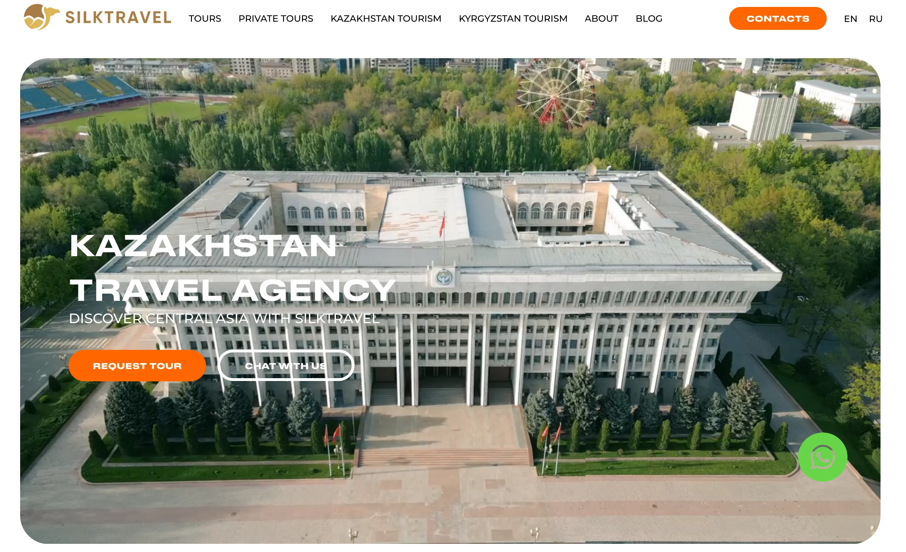
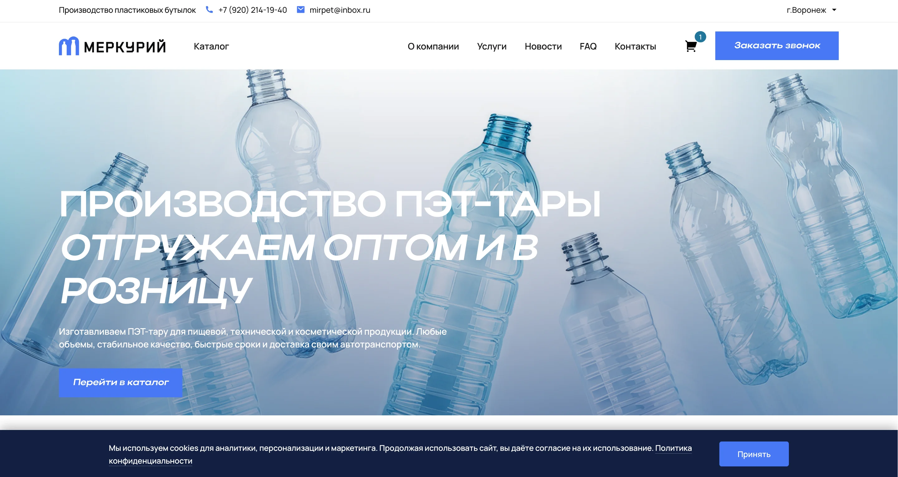
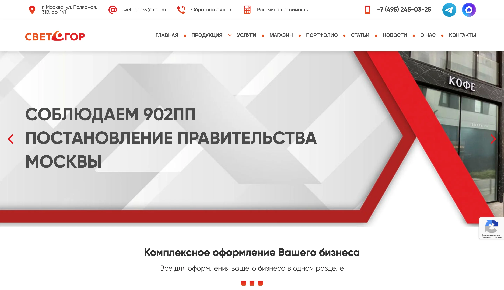

Создание и доработка сайтов на Tilda
Собираю новые страницы и аккуратно дорабатываю существующие сайты на Tilda.
- создание лендингов и страниц
- редактирование блоков и структуры
- подключение форм и базовые правки UX
Frontend Developer для бизнеса и фриланс-задач
Разрабатываю и дорабатываю сайты так, чтобы они выглядели профессионально, работали быстро и вызывали доверие с первых секунд.
Услуги
Можно обратиться как за запуском сайта с нуля, так и за точечными правками, доработкой существующего проекта, адаптацией под мобильные устройства, публикацией на хостинг и постоянной технической поддержкой.
Собираю новые страницы и аккуратно дорабатываю существующие сайты на Tilda.
Работаю с сайтами на WordPress + Elementor: от новых страниц до точечных доработок.
Делаю чистую адаптивную верстку по дизайну с акцентом на аккуратный результат.
Вношу изменения в готовую верстку без лишнего хаоса и без слома текущих блоков.
Создаю, дорабатываю и поддерживаю сайты на популярных CMS под задачи проекта.
Исправляю отображение на телефонах и планшетах, чтобы сайт выглядел аккуратно на всех экранах.
Помогаю довести проект до запуска: размещение, базовая настройка и технические правки перед релизом.
Подхожу для регулярных обновлений, быстрых задач и сопровождения после запуска.
Цены
Это стартовые вилки по основным задачам. Точная оценка зависит от объема, сроков, качества исходников и общей сложности проекта.
Мелкие доработки
от 549 ₽ Точечные изменения, фиксы, правки интерфейса и контента.Верстка страницы
от 5 495 ₽ Одна полноценная страница по макету с адаптивом и анимацией.Лендинг под ключ
от 13 459 ₽ Структура, верстка, адаптация, анимации и готовность к запуску.Гарантия после сдачи
30 дней Исправляю любые баги, связанные с выполненной работой, без доплаты в течение 30 дней после сдачи проекта.Финальная стоимость зависит от объема, сроков и сложности проекта.
Запросить точную оценкуКейсы
Ниже проекты с разным форматом задач: создание новых страниц, запуск магазина под ключ и доработка существующих сайтов на WordPress.

TildaПроект для туристического сайта с задачей расширить структуру и адаптировать контент под русскоязычную аудиторию.

StoreИнтернет-магазин, который был собран с нуля под ключ: от структуры и визуальной части до запуска на CMS.

WPПроект по доработке существующего сайта на WordPress с правками текущей структуры и контента.
Отзывы
Здесь собраны короткие отзывы о сотрудничестве: как проходила работа, насколько быстро решались задачи и каким получился итоговый результат.
Что отмечают
Реальные отзывы по доработкам, натяжке дизайна, Tilda-задачам и работе с WordPress.
Этапы работы
Работаю по прозрачной схеме: вы понимаете статус задачи, сроки и что происходит на каждом этапе.
Фиксируем цель, объем работ, материалы и приоритеты.
Даю реалистичную оценку без заниженных обещаний.
Собираю, дорабатываю или исправляю проект по согласованному плану.
Уточняем детали и доводим результат до нужного вида.
Передаю готовый результат и при необходимости остаюсь на поддержку.
Обо мне
Я специализируюсь на лендингах, промо-страницах, доработках и поддержке фронтенда. Для меня важно, чтобы результат был аккуратным, быстрым и удобным не только визуально, но и в дальнейшей работе с проектом.
Беру задачи, где нужен современный внешний вид, чистая адаптивная верстка и спокойный рабочий процесс без перегруза лишней технической сложностью.
Четкие сроки, прозрачная коммуникация и результат, который можно сразу использовать.
Новые страницы, правки текущих сайтов, визуальные улучшения и поддержка после запуска.
FAQ
Да. После завершения работы помогу подобрать подходящий домен и хостинг, загружу сайт на хостинг и доведу запуск до рабочего состояния. АБСОЛЮТНО БЕСПЛАТНО :)
Такое бывает редко, но на всю выполненную работу я даю гарантию 30 дней. Если в этот период появятся баги, связанные именно с моей работой, я бесплатно все исправлю.
По количеству правок жестких ограничений нет. Задача доводится до нужного вам результата, и все согласованные правки в рамках проекта вносятся без лишних споров.
Да, по запросу могу бесплатно показать и объяснить, как управлять сайтом: где редактировать контент, как вносить базовые изменения и что нужно для дальнейшей работы.
Да, конечно. Подключаю формы, анимации, карты, чаты, CRM и другие нужные интеграции, если они требуются для вашего проекта.
Стоимость рассчитывается индивидуально. Она зависит от объема задачи, сложности проекта, количества страниц, нужных доработок и дополнительных интеграций.
Все зависит от конкретной задачи. Чаще всего для старта нужны доступы к админ-панели сайта и краткое описание того, что именно нужно сделать.
Да. В процессе работы я держу связь, показываю промежуточные результаты и отправляю обновления, чтобы вы понимали, как идет работа и что уже готово.
Контакты
Подходит для новых проектов, срочных правок, поддержки и доработок существующих сайтов.